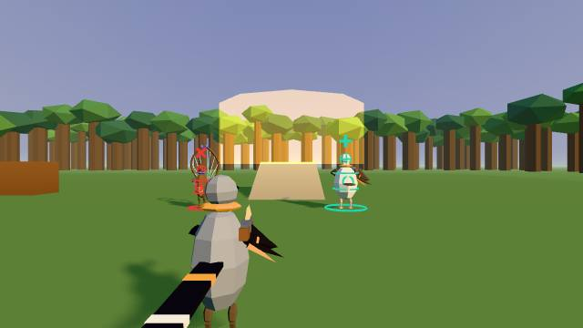
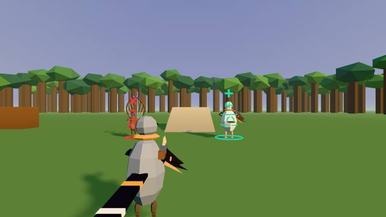

Shrike Playable
Area control · Playable since Stage 2
Appearance: compact, upright songbird with a heavy hooked beak and a black bandit mask; long tail held straight out behind like a blade; a row of thorns along the rifle's barrel. Grey back, white chest, black mask and wings. Reads at 40 m as "small bird, horizontal tail, hook beak".
How to play
Area-control birds change where the enemy can stand. Place traps and zones on the routes your enemies must take, and make them choose between walking into them and giving ground.
Shrike fights with the Barb Rifle, which fires travelling projectiles you have to lead. Damage drops off between 20 m and 45 m, and head hits are beak shots worth ×1.65. Every level above 1 is a Molt: +34 max HP per level; +3% gun damage of base per level; +1 Song power per level; +3 melee damage per level.
Lay the Thorn Larder where enemies will walk, not where they stand. Combine the Briar Patch with a root to hold a lane. Barbs travel, so lead moving targets.
Abilities
Four abilities. Slots 1 to 3 unlock at level 1, the ultimate at level 6. Each can be upgraded three times, for 1, 2, 5 AP, in order; see Ability Points. The shortest cooldown in the kit is Thorn Larder at 14 s.
1. Thorn Larder
Plant a thorn trap (arms after 0.75 s, lasts 60 s, at most 4). The first enemy hero within 1.5 m takes 80 + 0.9 x SP Song damage, is rooted 1 s and revealed 4 s. Two charges.
- Tier 1 · 1 AP+1 charge (3 charges) +1 charge
- Tier 2 · 2 APRoot lasts 1.5 s root +0.5
- Tier 3 · 5 APTrigger bursts in a 4 m radius and hits every enemy hero in it burst +2.5

2. Briar Patch
A 5 m zone for 6 s: enemies inside take 25 + 0.3 x SP Song damage a second and are slowed 30%.
- Tier 1 · 1 AP+1.5 m radius (6.5 m) radius +1.5
- Tier 2 · 2 AP-4 s cooldown cooldown -4 s
- Tier 3 · 5 APEnemies inside are grounded and take +15% Song damage
3. Impaling Bolt
A bolt (35 m): the first enemy hero hit takes 70 + 0.8 x SP Song damage and is knocked back 6 m. If they hit a wall they are pinned, stunned 1.25 s and take 40 + 0.4 x SP more.
- Tier 1 · 1 AP+30 damage (100 + 0.8 x SP) damage +30
- Tier 2 · 2 AP-4 s cooldown cooldown -4 s
- Tier 3 · 5 APPierces all heroes; pin stun 2.0 s pin stun +0.75, single range -35, pierce range +35

4. Butcher's Ring
After 0.8 s a ring of thorns (9 m radius) stands for 6 s. A hero crossing it takes 150 + 1.4 x SP Song damage and is rooted 1.25 s (once per 1.5 s). Enemies inside have 40% heal reduction. It does not block shots.
- Tier 1 · 1 AP+2 s duration (8 s) duration +2
- Tier 2 · 2 AP-25 s cooldown cooldown -25 s
- Tier 3 · 5 APEnemies inside also take 30 + 0.3 x SP Song damage per second
Since Stage 2. See all heroes.